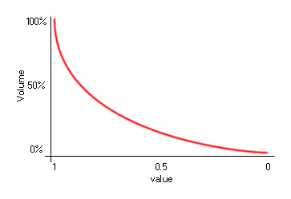

sound_global_volume(value);
| Argument | Description |
|---|---|
| value | The new global volume from 0 to 1. |
Returns: N/A
With this function you can change the final volume of all sounds
in your game. This will change the volume for all future instances
created where sound is played, but will not affect those
instances already playing sounds, and the volume can be set to
a value between 0 (silent) and 1 (full volume), with a value of 1
being the default volume. Note that any individual volumes set with
the function sound_volume
will also be affected by this function meaning that the final
volume for a sound is the compound result of the individual volume
and the global volume. The volume scale is logarithmic in nature,
so a volume of 0.5 is not half volume, as illustrated by the
image below:

if keyboard_check_pressed(vk_add)
{
if vol < 1 vol += 0.1;
sound_global_volume(vol);
}
The above code checks for a key press and when it detects one it raises the global volume (to a maximum of 1).